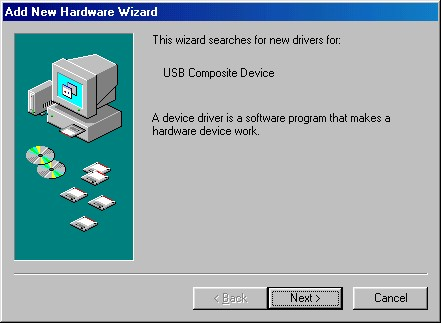
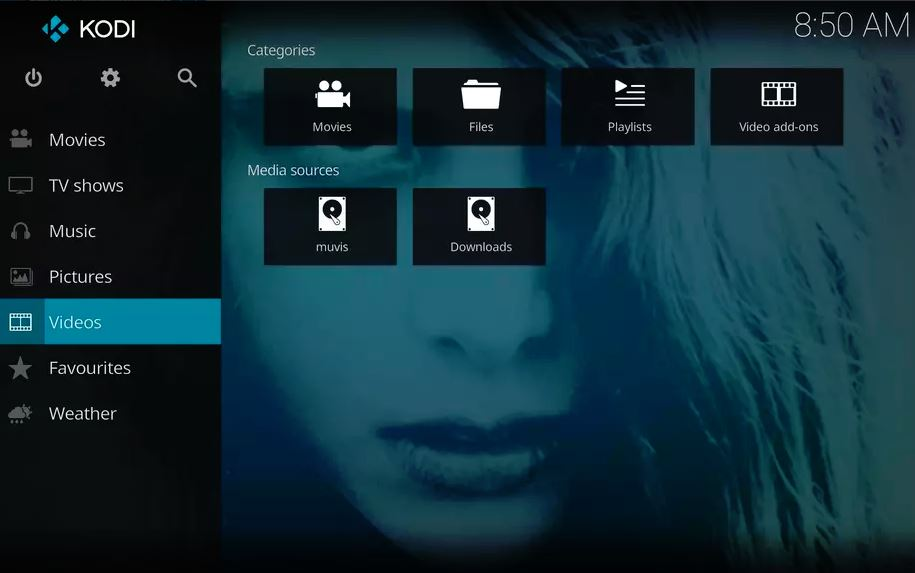

LIBRO
Introducción:
https://www.youtube.com/watch?v=7-jWnGO6fuY
Para entrar aquí, entremos en las miles de posibilidades de funciones que tiene un ordenador moderno común, comparado con la televisión, y lo útil que sería si el ordenador pudiese procesar aquello que sale de una pantalla de televisión, o que nuestro ordenador sintonizase los canales directamente.
Para esto se usa una tarjeta de TV o una tarjeta capturadora, para capturar aquello que nos interese de las ondas de televisión (es un sintonizador ya en si), o capturar directamente la pantalla de nuestro televisor usando una capturadora, lo que tiene múltiples usos, como el de pasar una imagen de un dispositivo a otro. También, con el software y mando incorporado (casi todas las tarjetas los llevan, hasta las más baratas), se pueden grabar, visualizar, y configurar la emisión que llega a nuestro ordenador como si de un televisor se tratase (cambiar el brillo, el contraste, los colores...) [1].

Ejemplo de interfaz gráfica del software de la tarjeta de TV Asus PCI. Cogida de ManualsLib
Con la llegada de la televisión digital (en TDT), la venta de estas tarjetas aumentó considerablemente, ya que esta se podía disfrutar de la televisión sin pagar cuotas y, además, de las funciones que estos ofrecían por su comparablemente bajo precio (alrededor de 20 euros para los modelos más baratos), comparables con televisiones de lujo de la época (sintonizador analógico, grabación de TV digital, captura de vídeo...) [1]
Volver arriba
Tipos:
Los tipos reconocibles de tarjetas de TV son:
- Analógicos: Capturan ondas analógicas. [4].
- HDTV: Capturan ondas en el formato HDTV. [4].
- Híbrido: Capturan ambos tipos de ondas, aunque solo uno a la vez.
- Combo: Pueden capturar ambos tipos de ondas a la vez.
Estos pueden ser dispositivos con conexión USB, PCIe o PCI.
Volver arriba
Funcionamiento:
El ordenador en sí no puede procesar directamente las imágenes que vienen de un televisor, debido que el tipo de conexión que usa un ordenador actual (HDMI), no corresponde con ningún estándar de televisión actual de forma nativa (como puede ser el PAL o el DVB-T en Europa). Lo que permite la tarjeta de televisión ahí es permitir que esas señales sean procesadas por el hardware de la tarjeta a información que el ordenador entiende y así crear una interfaz entre las señales de televisión y el microprocesador, permitiendo a partir de un software típicamente incorporado en la tarjeta virtual, visualizar las imágenes y realizar funciones sobre ellas.
Es muy importante aquí el genlocking, ya que un ordenador no muestra las imágenes en líneas exactamente como lo haría un televisor, sino en píxeles. Esto se hace para sincronizar al ordenador con los estándares de TV, y consiste en usar una señal de referencia para sincronizar las velocidades del procesador con las del televisor, que puede ser, por ejemplo, una señal retardada de televisión, porque que los televisores no solían usar píxeles en la época donde se empezaron a popularizar estas tarjetas (ahora hay Smart TVs que funcionan con píxeles [2]), sino líneas de escaneo. Se tenía que emular un funcionamiento parecido a cómo lo haría un televisor pues, para visualizar la imagen. [3]
VS
Píxeles (Izquierda, Tomada por Ravedame. CC Atribución-CompartirIgual) y Scanlines (Derecha, Realizada por Ian Harvey). Fotografías tomadas de Wikimedia.
Volver arriba
Marcas:
Las marcas más conocidas de tarjetas de televisión y capturadoras son:
- Hauppage: (Conocida por su línea de tarjetas WinTV): https://www.hauppage.com/ [4]
- Realtek: (Conocida por sus dispositivos USB basados en RTL2832u): https://www.realtek.com/
- AMD: (en ese momento, ATI, por su línea de tarjetas gráficas ATI All in Wonder, con funcionalidad añadida de una tarjeta de TV.): https://www.amd.com/
Volver arriba
Instalación:
Para instalar una tarjeta de TV se necesita, primero instalarla físicamente en el ordenador en un puerto de expansión (PCIe o PCI), o en otro puerto (como el USB que posee el RTL28232U). Aquí se debe presionar la tarjeta fuerte para que encaje y cerrar tras esto la tapa de la carcasa.
https://www.youtube.com/watch?v=DzCctcFVWHQ. Vídeo explicativo (en inglés).
El ordenador (si usa el sistema operativo Windows) debería detectar automáticamente el nuevo hardware, y empezar a buscar drivers para este dentro del CD o en Windows Update, dependiendo de la antigüedad del sistema. Tras instalar los drivers, acceder al CD o a Internet e instalar el último software necesario para reproducir televisión, el cual se debería configurar correctamente y automáticamente. Ya tendríamos instalada la tarjeta y el software necesario. [5]
Ejemplo de interfaz de drivers para nuevo hardware de Windows 98
Si la tarjeta es compatible con aplicaciones de terceros (como Windows Media Center o Kodi), podrían usarse como visualizadores, grabadores y todas las funciones que ofrezca la tarjeta de TV.
Menú principal de Kodi
Volver arriba
Lugares de venta:
Los lugares de venta, debido a la antigüedad de mucho de este hardware, se puede encontrar solo en ciertos nichos de radio o en páginas de segunda mano, rara vez hay proveedores de tarjetas de TV modernas.
Ciertas páginas web donde se puede encontrar este hardware en venta son:
Ebay: 20 euros los modelos más baratos.
Link
Amazon: 20 euros los modelos más baratos.
Link
RTLSDR: 21.95 $ estadounidenses el modelo RTLSDR.
Link
AstroRadio: 19 euros el modelo más barato (RTL2832U)
Link
AliExpress: 26.90 euros el modelo RTLSDR
Link
Milanuncios: 23 euros el modelo RTLSDR
Link
Hauppage: (Un raro caso de tarjetas de TV PCIe de reciente creación) 119 $ estadounidenses modelos HDTV con capacidad de capturar cuatro canales a la vez.
Link
Volver arriba
Bibliografía y Webgrafía:
Hardware y Componentes Edición 2006. Anaya Multimedia. 84-415-1979-X. Juan Enrique Herrerías Rey. Pp 402-406.
https://www.ocu.org/tecnologia/television/noticias/tipo-de-pixeles/
Upgrading and Repairing Pcs 20th Edition. QUE. 978-0-7897-4710-5. Scott Mueller. Pp 632.
Building the Perfect PC. O'Reilly. 0-596-52686-5. Robert Bruce Thompson & Barbara Fritchman Thompson. Pp 150-151.
https://www.youtube.com/watch?v=DzCctcFVWHQ.
Volver arriba